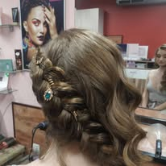
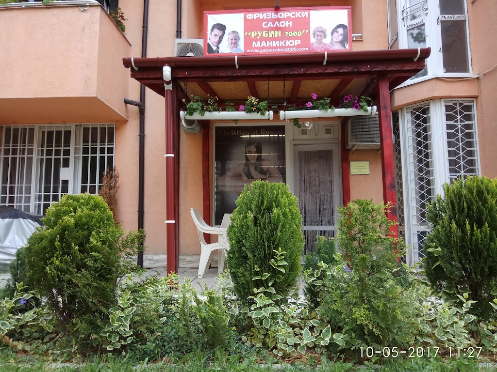
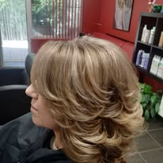
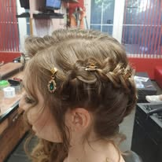
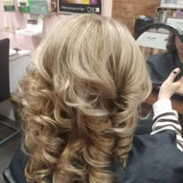
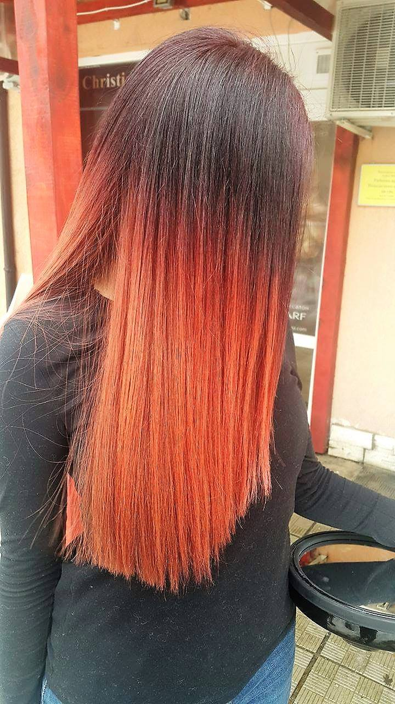
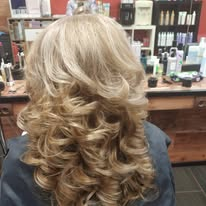
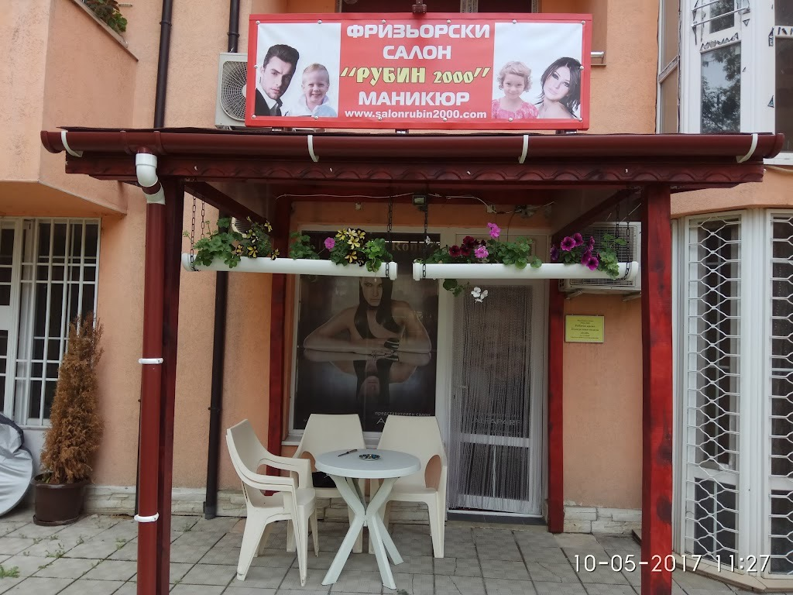

Фризьорски услуги наблизо
Подстригване, оформяне, боядисване и прически в салон до познатите улици на Дружба 1.
Фризьорски салон · ул. „Тирана“ 25
Салон Рубин 2000 е квартален салон в ж.к. Дружба 1 с фризьорски услуги, маникюр и лесно записване по телефона.


Защо хората се връщат
Подстригване, оформяне, боядисване и прически в салон до познатите улици на Дружба 1.
Клиентите често споменават мило отношение, старание и готовност да се съобразят с желаната визия.
Най-сигурният начин е да се обадите предварително, особено за боядисване, официална прическа или маникюр.
Услуги
Салонът е подходящ както за ежедневна поддръжка, така и за по-специален повод. За точен час и услуга се обадете директно.

Прически и резултати




Клиентски отзиви
„Подстригват уникално! Препоръчвам. Добре е да си запишете час предварително, защото са доста заети.“
Veselin Tsvetkov„Добро и бързо обслужване. Предлагат фризьорски услуги и маникюр. Дамите винаги са мили и отзивчиви.“
Adreana Kehayova„Много уютно и приятно. Фризьорките и маникюристката са просто магьосници!“
Лили Джаханска„Много приятно място, където ще се погрижат добре за вас и вашия външен вид.“
Ludmila BalabanovaРаботно време
За да избегнете чакане, обадете се предварително и уговорете удобен час.
Локация и контакт
Салон Рубин 2000
ул. „Тирана“ 25, 1592 ж.к. Дружба 1, София
+359 88 580 4169
